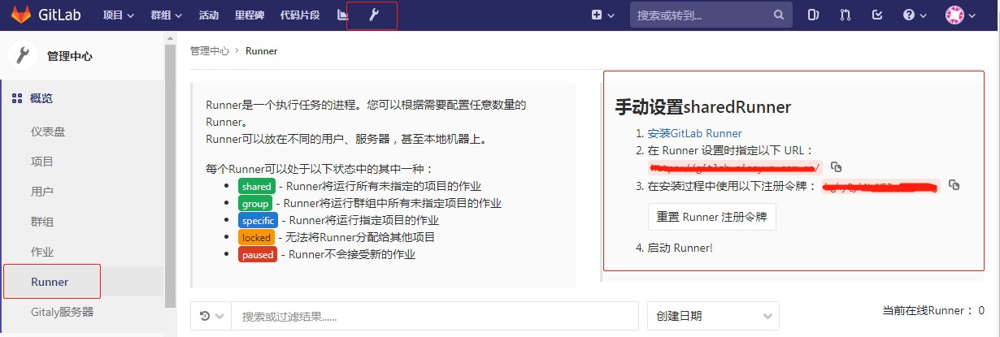
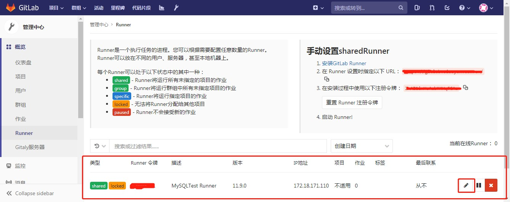
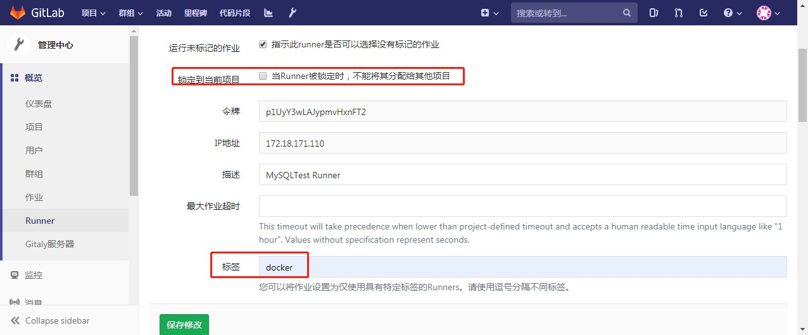
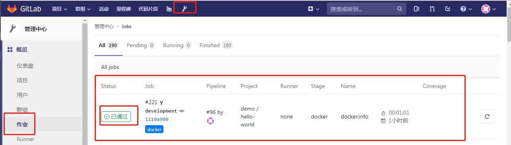

1. GitLab CI/CD环境搭建
1.1. 简述
GitLab现已集成CI/CD功能。默认每个项目，都会自动启用CI/CD功能。但要使用，还需要配合Gitlab-Runner才可正常运行。Gitlab只是将具体工作交给Gitlab-Runner.
1.2. Gitlab Runner安装
1.2.1. GitLab Runner类型
共享GitLab Runner
共享的可以看成是全局的，所有项目都可使用
项目GitLab Runner
只运行指定项目的CI/CD工作。
1.2.2. 获取注册信息
以管理员身份进入GitLab控制台，进入"管理中心" ---> "概览" ---> "Runnner"菜单，获取注册地址与注册Token  有了以上信息后，我们就可以编写一个Docker-compose文件，来启动GitLab Runner了。
1.2.3. 编写服务文件
docker-compose.yaml
gitlab-runner:
container_name: gitlab-runner
image: gitlab/gitlab-runner:latest
restart: always
net: "host"
privileged: true
volumes:
# 配置文件持久化
- ./config.toml:/etc/gitlab-runner/config.toml:rw
# 因为使用Docker里面运行Docker,挂载进去
- /var/run/docker.sock:/var/run/docker.sock
编写好后，启动Gitlab Runner
docker-compose up -d
# 进入容器后，在容器里面执行以下内容，进入注册
gitlab-runner register -n \
--url https://URL/ \
--registration-token Token \
--executor docker \
--description "MySQLTest Runner" \
--docker-image "docker:stable" \
--docker-privileged
注册成功后，会发现config.toml文件有相应的修改，根据实际情况进行调整
config.toml
# 完整可用配置项
# https://docs.gitlab.com/runner/configuration/advanced-configuration.html
# 并发限制，限制同时工作的数量
concurrent = 100
check_interval = 0
[session_server]
session_timeout = 1800
[[runners]]
name = "MySQLTest Runner"
# 注册后的URL，不要修改
url = "URL"
# 该Token是注册后的Token,不要修改
token = "TOKEN"
# 执行器为docker，不同的执行器能使用的命令是不同，详细要查看官网
executor = "docker"
# 定义全局变量
environment = ["ENV1=VALUE1", "ENV2=VALUE2"]
[runners.docker]
tls_verify = false
image = "docker:stable"
privileged = true
disable_entrypoint_overwrite = false
oom_kill_disable = false
disable_cache = false
# 作业容器的卷挂载,这里因为要使用内网地址，将本机的HOSTS挂载进容器
volumes = ["/cache", "/etc/hosts:/etc/hosts:rw"]
shm_size = 0
[runners.cache]
[runners.cache.s3]
[runners.cache.gcs]
将GitLab Runner运行起来后，进入GitLab的"管理中心" --> "Runner"页面，会自动有GitLab Runner注册上来。  虽然GitLab Runner已注册上来，默认注册上来的Runner是锁定到当前项目的。因此还需要做一些小设置。
取消锁定到当前项目
给该GitLab Runner增加一个标签

1.3. GitLab配置
在每个项目的根目录下面，都需要创建.gitlab-ci.yml文件，该文件就是定义GitLab Runner CI/CD所要做的具体工作。
示例文件
# 完整指南：
# https://docs.gitlab.com/ee/ci/yaml/README.html
variables:
MAVEN_MIRROR_URL: "http://172.18.171.113/repository/maven-public/"
REGISTRY: "registry-vpc.cn-shenzhen.aliyuncs.com/siss"
TAG: "0.0.7-SNAPSHOT-test"
services:
- docker:dind
before_script:
- echo "Befor run build"
stages:
- build
- docker
build:jar:
image: sissyun/base-java
stage: build
only:
- master
- development
script:
- pwd && mkdir tmp
- mvn clean install
- cp target/*.jar tmp && cd tmp
- ls | xargs -t -i mv {} app.jar
artifacts:
expire_in: 10min
paths:
- tmp
tags:
# 该TAG是表示GitLab Runner的Tag，必须指定
- docker
docker:info:
image: docker:stable-dind
stage: docker
only:
- master
- development
script:
- docker login -u ${DOCKER_ENV_USER} -p ${DOCKER_ENV_PASS} ${REGISTRY}
- echo FROM registry-vpc.cn-shenzhen.aliyuncs.com/siss/base-image-java:0.1 > Dockerfile
- echo 'ENV TZ="Asia/Shanghai" APP_OPTIONS="-Xms128m -Xmx512m -Xss512k"' >> Dockerfile
- echo WORKDIR ${APP_HOME:-/opt/app-root/src/} >> Dockerfile
- echo COPY tmp/app.jar ${APP_HOME:-/opt/app-root/src/} >> Dockerfile
- echo ENTRYPOINT [\"sh\",\"-c\",\"java -jar ${APP_HOME:-/opt/app-root/src}/app.jar $APP_OPTIONS\"] >> Dockerfile
- cat Dockerfile
- export DOCKER_HOST=${DOCKER_PORT}
- docker build -t ${REGISTRY}/${CI_PROJECT_NAMESPACE}_${CI_PROJECT_NAME}:${TAG} .
- docker push ${REGISTRY}/${CI_PROJECT_NAMESPACE}_${CI_PROJECT_NAME}:${TAG}
tags:
- docker
dependencies:
- build:jar
以上，每当项目有提交，会自动触发.gitlab-ci.yml文件中定义的工作流。可以在"管理中心"--->"作业"中看到CI/CD的工作详情与日志。
